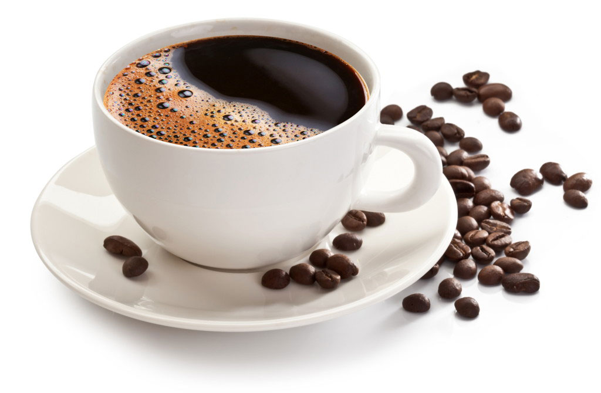
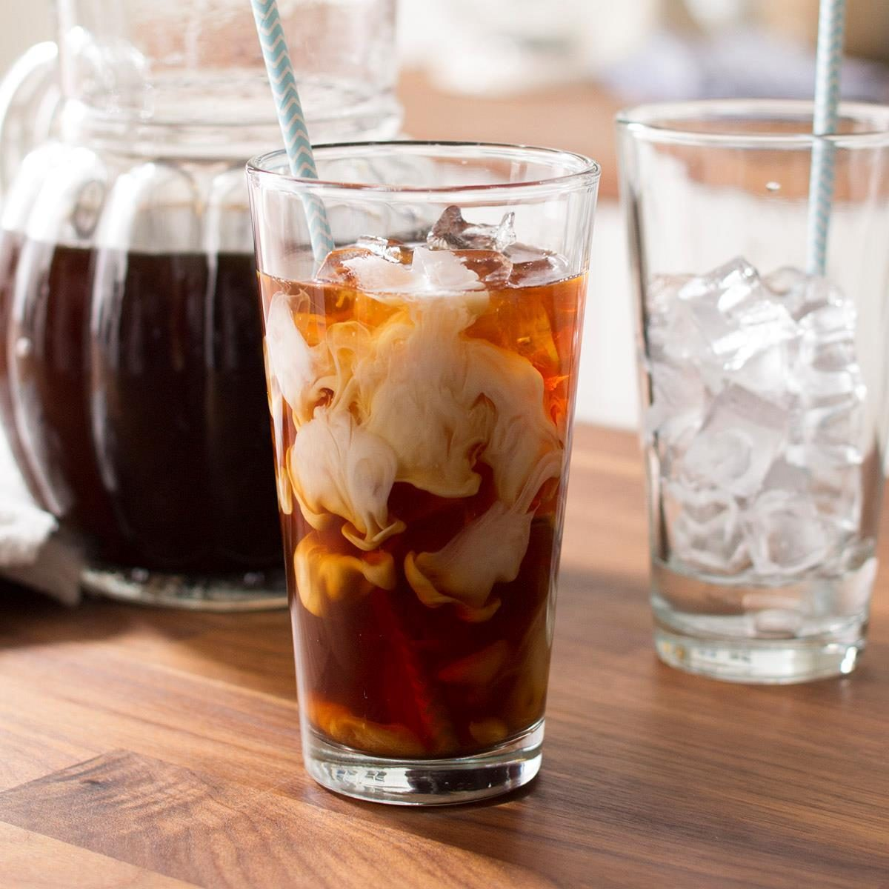
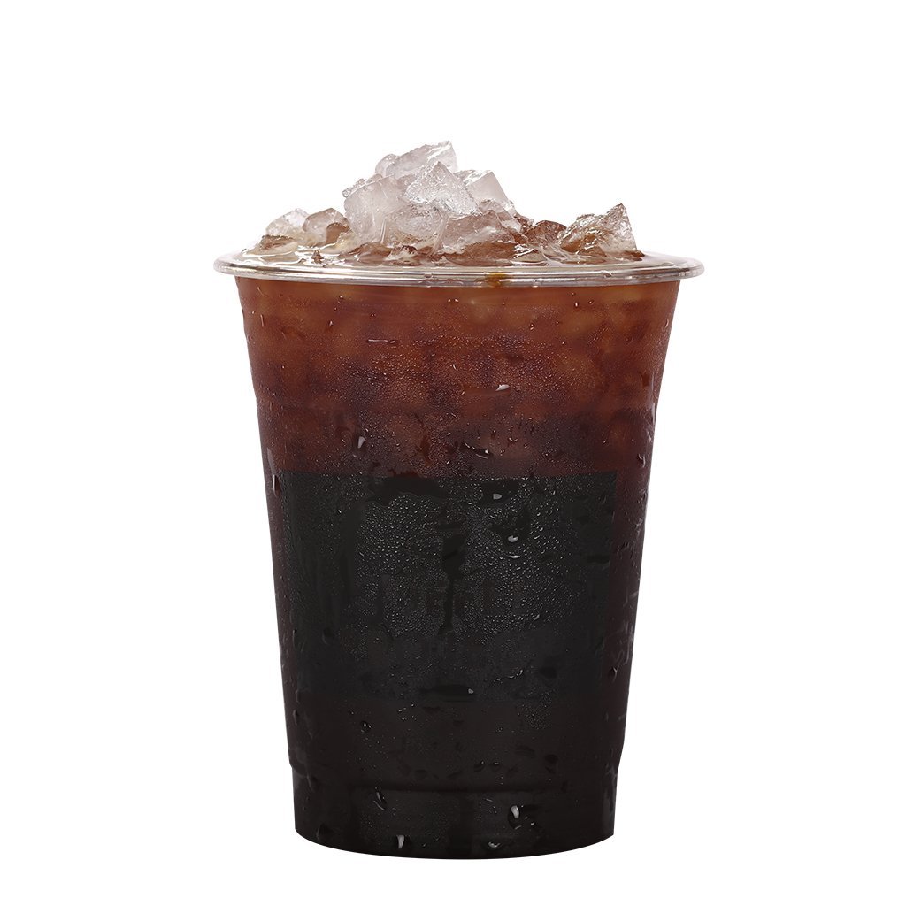
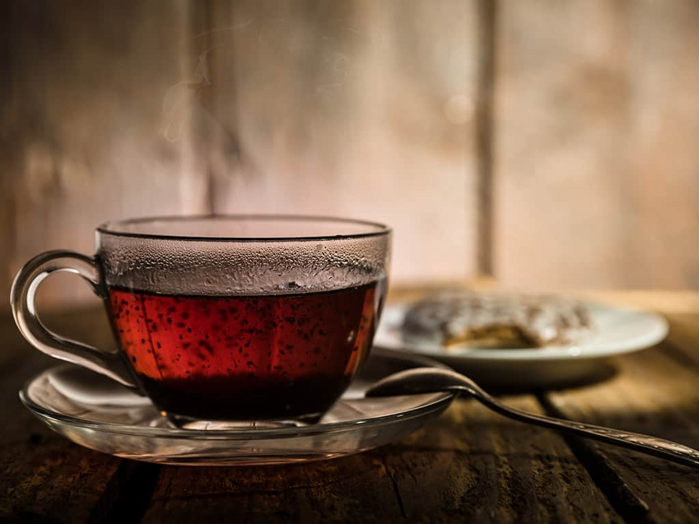
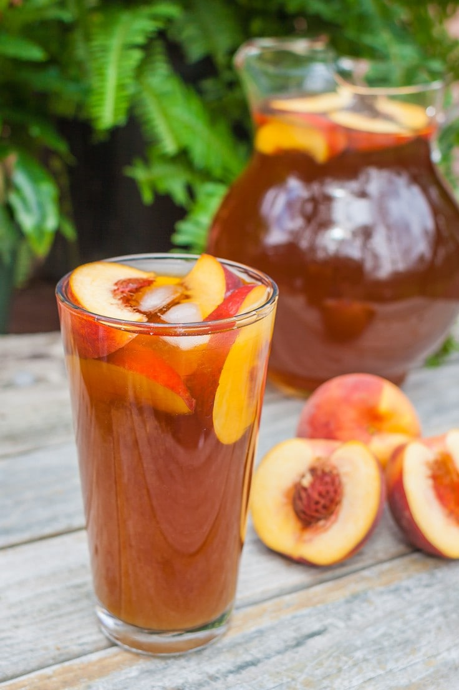
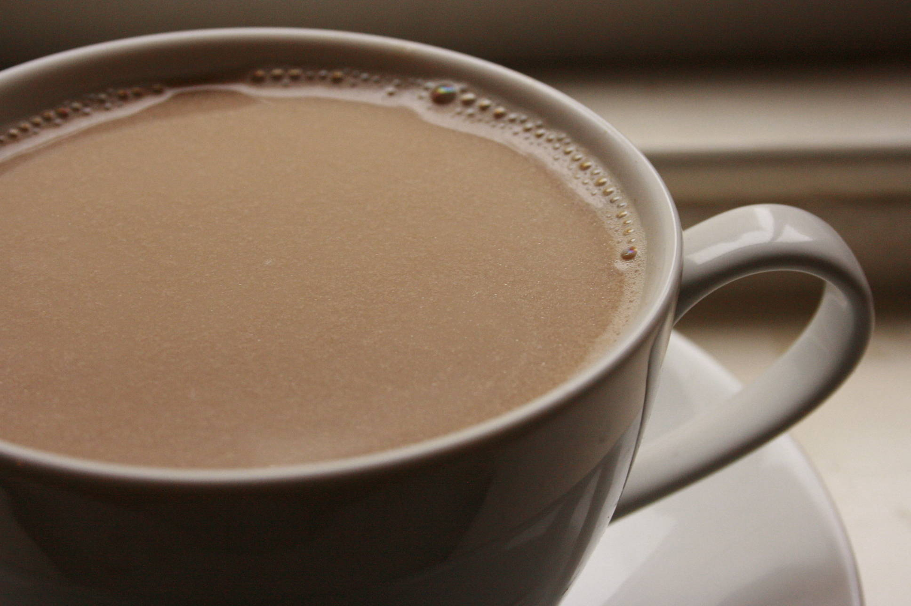

drink
- 
Robusta
Using the best quality coffee beans, elaborately made, mellow and fragrant taste, value for money
- 
Cold Brews
Cold brew coffee has a great taste than is different than traditional hot coffee. When coffee is brewed in hot water, acidic / oily components are extracted and leads to a more bitter taste.
- 
Americano
An americano is an espresso based drink made with espresso and water. It can be hot or iced. Flavors, creams and sugars can be added.
- 
Black tea
made from leaves of the Camellia sinensis plant, it is known to be especially beneficial for certain health purposes, healthy drink. Can make either cold or warm.
- 
Ices Peach juice
Juice made from ripe peach fruit is naturally sweet, rich in alkaline that treat the symptoms of gastritis, constipation, nausea, stomach heaviness and flatulence.
- 
Chai tea
Chai tea is a great source of antioxidants such as catechins and theaflavins. These fight oxidative stress and can play a role in preventing cancer and other conditions.